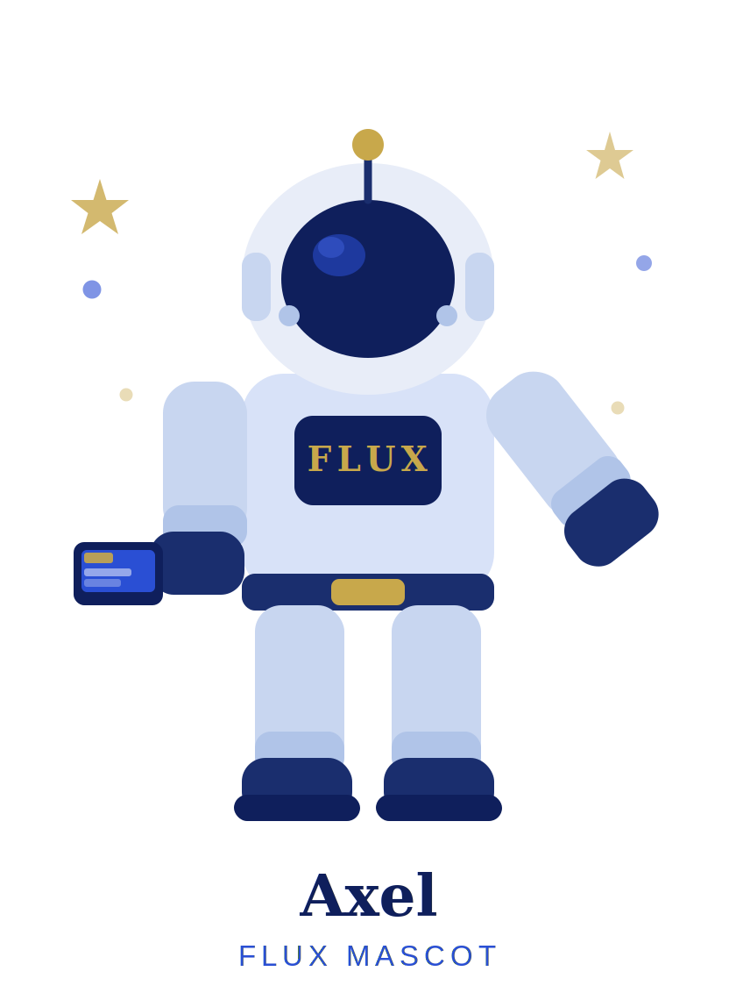

{{ saudacao }}
Suas ferramentas de IA em um só lugar.
{{ f.nome }}
{{ f.desc }}
Os melhores projetos do Flux podem virar as próximas ferramentas deste hub.
Perfil
Foto e nome sincronizados da sua conta Google Workspace no login.
Nenhum ciclo ativo
O próximo ciclo do programa de inovação ainda não foi aberto. O histórico dos ciclos anteriores continua disponível.
{{ cicloNome }}
{{ cicloDatas }} · duração de {{ cicloMesesL }}
{{ kbNota }}
Inscrever pitch
Descreva seu projeto de IA. Depois de enviado, o pitch não poderá ser editado — mas o produto final pode ser um pouco diferente do descrito.
Todos os valores do programa são padronizados por ciclo. Valores mensais são convertidos automaticamente.
Selecione os que se aplicam ao projeto — o comitê usa esta lista na nota de Retorno Intangível.
Confirme seu pitch
Revise as informações antes do envio.
Depois de enviado, o pitch não poderá ser editado. Você poderá excluí-lo até o fim das inscrições — e o produto final pode ser um pouco diferente do descrito aqui.
{{ pjNome }}
Projeto desclassificado pelo comitê — fora do ranking deste ciclo. O aprendizado fica registrado e uma nova ideia pode ser inscrita no próximo ciclo.
{{ pjAlertTxt }}
Resultado registrado em {{ pjResDataL }}. Aguardando aprovação do retorno tangível e notas do comitê — o projeto entra no ranking assim que a avaliação for concluída.
Acesso liberado para a execução do pitch — vale até o encerramento do ciclo. A concessão é manual, no console do Claude.
Todo mundo começa sem acesso: o administrador avalia o pitch e libera o tier de Claude para a execução, válido até o fim do ciclo.
{{ pjNotaPrivada }}
{{ excluirNotaL }}
Registrar resultado
Informe o que o projeto realmente entregou. O retorno tangível só entra no cálculo depois da aprovação do comitê.
O deadline ({{ rsDeadlineL }}) já venceu. O registro continua possível, mas a Pontualidade será 0% — e cabe ao comitê aceitar ou desclassificar o projeto.
Meus projetos
Etapas, prazos e tarefas de todos os seus projetos. Pitches do Flux criam um projeto aqui automaticamente — e você pode abrir projetos livres, fora do programa.
Nenhum projeto ainda
Inscreva um pitch no Flux — ele aparece aqui automaticamente — ou crie um projeto livre com o botão acima.
{{ tkProjeto }}

Nenhuma tarefa ainda — organize a execução do seu pitch criando as primeiras tarefas com o botão acima.
{{ rkTituloL }}
{{ rkSubL }}
Nenhum projeto avaliado ainda
Os projetos entram no ranking em tempo real assim que o comitê aprova o tangível e completa as notas.
{{ rkNotaL }}
Destaques por categoria
O líder de cada uma das 5 categorias do programa · {{ cicloNome }}
{{ c.projeto }}
Nenhum projeto avaliado nesta categoria ainda.
Histórico de ciclos
Ciclos encerrados, com projetos, pontuações e rankings congelados no encerramento. A pontuação não acumula entre ciclos.
Nenhum ciclo encerrado ainda.
Comitê de avaliação
Pitches inscritos aguardando avaliação: libere o tier de Claude para a execução — ou envie ao backlog / reprove.
Nenhum pitch aguardando acesso
Novos pitches inscritos aparecem aqui para o comitê definir o acesso ao Claude.
{{ p.just }}
{{ acessoNotaL }}
Projetos com resultado registrado aguardando aprovação do tangível e notas do comitê.
Nenhuma avaliação pendente
Quando um colaborador registrar o resultado de um projeto, ele aparece aqui para aprovação e notas.
O valor declarado só entra no cálculo e na normalização do ciclo após aprovação do comitê.
Nota de 0 a 5 · convertida em 0–100 pts · peso de 20% na nota final.
{{ avMembrosL }}
A nota de cada critério é a média dos 3 avaliadores, arredondada para o inteiro mais próximo (0,5 para cima). O titular vê apenas a pontuação final.
Visão geral
{{ admCicloL }}
Nenhum alerta no momento.
Usuários
Papéis cumulativos, atribuídos por administradores. Contas desativadas perdem o acesso imediatamente.
Todo usuário tem o papel base "Usuário". "Comitê" e "Admin" são cumulativos — Marcos acumula os dois.
Domínios liberados
{{ domNotaL }}
Teste ao vivo: adicione um domínio e tente um cadastro com ele na tela de solicitação de acesso.
Ciclos
Um ciclo ativo por vez. Encerrar um ciclo congela o ranking e o arquiva no histórico.
Avaliação de acesso dos pitches
{{ apNotaL }}
Todos os pitches inscritos já têm tier definido. Novos pitches aparecem aqui automaticamente.
{{ p.just }}
Acessos ao Claude
Acesso liberado pelo pitch deste ciclo — vale até o encerramento — e status da aplicação manual no console do Claude.
Todos os colaboradores ativos têm projeto inscrito neste ciclo.
{{ acNotaL }}
Ferramentas do hub
Cadastre ferramentas futuras sem alterar o código do hub — nome, descrição, rota e perfis com acesso.
Logs de auditoria
Trilha das ações administrativas e de avaliação: quem fez o quê e quando.